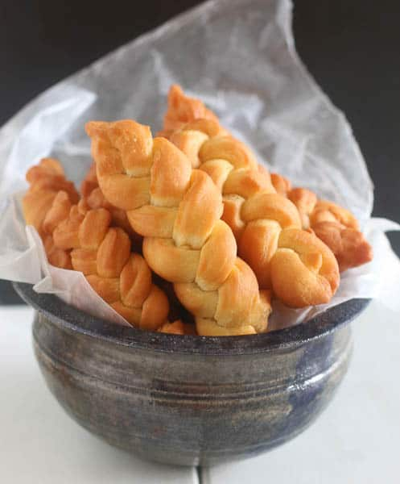

Koeksister Recipe

Good 'ol South African Koeksisters
Koeksisters pronounced "cook sisters" is a super popular South African sticky doughnut .It derives it’s name from the Dutch word “koekje”, which can be interpreted as “cookie”. There are two versions of this popular doughnuts: this is the Afrikaner version –sticky ,braided ,crunchy and crunchy –drenched in syrup, laced with cinnamon, lemon and ginger. The end result… a taste bud explosion.
Ingredients
Dough
- 1 cup corn flour
- 1 1/2 cups all purpose flour
- 25g butter
- 2 1/2 teaspoons baking powder
- 3/4 teaspoon salt
- 2 tablespoons sugar
- 1/2 cup milk
- 1 large egg
- oil for deep frying
Syrup
- 2 cups granulated sugar
- 1 1/4 teaspoon cream of tartar
- 1 tablespoon chopped Fresh ginger
- Fresh squeeze lemon juice
- 1 cinnamon stick
- 1 cup of water
Method
Step 1
In a medium saucepan. Add, cream of tartar, salt, sugar, ginger, lemon juice and cinnamon stick. Bring water to a boil and let it simmer for about 10 minutes, Stirring syrup occasionally. Let it cool and refrigerate until ready to use.Step 2
In a large bowl combine all the dry ingredients- corn meal, flour, sugar, baking powder
• Then all the wet ingredients milk and egg followed by butter. Knead several times until all the ingredients have been incorporated. Let it rest for about 30 minutes.
• Place dough on board and roll out into about 1 inch thickness. Using a cookie cutter or knife cut into strips thin strips and then shorter strips.
• Divide the dough into three strands and stretch them out carefully until they are of an even thickness all the way down. Pinch the ends together
• Take the left strand and cross it over the middle strand.Take the right strand and cross it over the middle strand. Tightly pinch to seal the end.
Step 3
In a large, sauce pan pour vegetable oil into a pot, until it is at least 3 inches Test to make sure the oil is hot enough by putting a ‘drop’ of batter into the oil. If it is not hot enough, the batter will stay at the bottom of the pot rather than rising to the top. If using a deep fryer, fry at 350 degrees
Gently place koeksisters in the pan
Fry for a few minutes until the bottom side is golden brown.
Turn the over and fry for a few more minutes until the other side is golden brown.Final Step
Use a large spoon or something like that to take it out of the oil and directly place in syrup.
Leave to soak in the syrup for a while. Transfer to a cooling rack. Cool completely before eating.
Return to main page